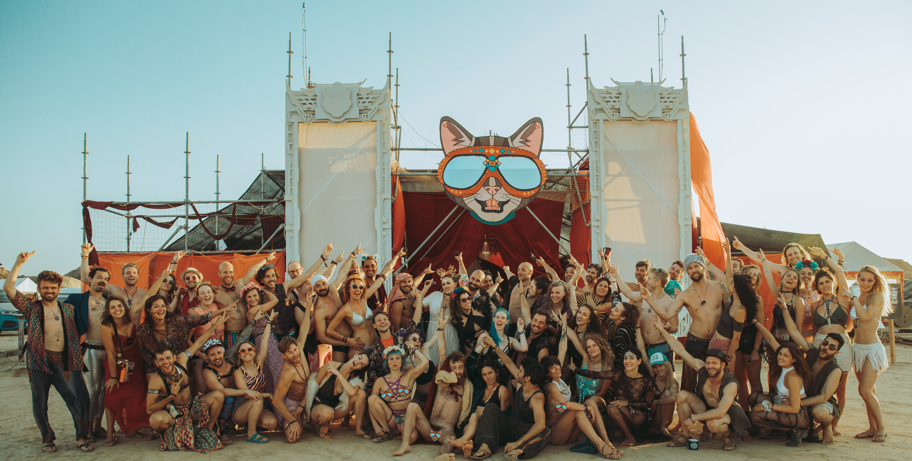

Barrios Guide

Barrios are a fundamental part of making Elsewhere what it is!
Let’s be honest, coming to Elsewhere is a lot of work. It is fun, fantastic, interesting and quite probably a life-changing experience too — but it’s also tough. Even bringing only yourself into the desert, with all the supplies required to support yourself for a week, and then packing everything out again takes some planning. And that’s just the self-reliance part — we haven’t even talked about the self-expression part yet!
By working together with a group of like-minded people, you can divide the work so you still have some time, energy and resources left over for fun things like art projects, bars, trampolines and maybe even a ball pen (to name just a few of the great things heroic theme camps have brought out to the Los Monegros desert over the years).
How to create your own barrio
We’ve put together a guide that walks you through everything you need to know to start and run a barrio at Elsewhere.
For any questions: barrios@nobodies.team
You can also communicate and collaborate with the barrios organizers on Discord.
Join a barrio
Ready to find your people for the week? Explore the barrios on Humans, apply to one, and see which one feels like home.
Alternative to joining a barrio: freecamping
Did you know that you don’t have to join a barrio? Some Elsewhere participants prefer to camp alone or with a small group of friends and organize their own food, water, and shade. We call it “freecamping”.
It gives them the freedom to do camping just the way they like. You can’t reserve space in the freecamp areas, you won’t know exactly where you’ll be camping until you find the space, it is settled on a first-come-first-camped basis. Alternately, if you have some big ideas, you can form your own barrio.
Check out the Freecampers Facebook Group to pool resources, ask tips and meet other freecampers!